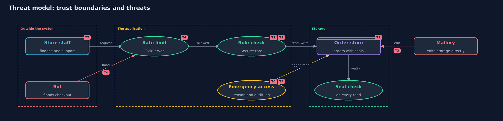

Threat Model — The CIA Triad
A threat model answers four questions: what are we protecting, who or what could harm it, how, and what do we do about it. This one covers this project's own demo system, not a production deployment. Domain: an online store.
Scope
The demo order system of an online store: the unprotected NaiveStore, the protected SecureStore with its
role check, seal and emergency exception, and the TickServer with its RateLimiter. It covers what the
three promises of the CIA triad protect inside this one system. It does not cover the network, the
database product, or how staff sign in.
What we protect (assets)
- The order records: customer, item, shipping address and amount paid (confidentiality).
- The correctness of each amount (integrity).
- The checkout, which must stay usable during a sale (availability).
- The seal key, which makes tampering detectable.
- The audit log of emergency access.
Who and what acts on the system
- Finance staff (Ana): may see and change amounts.
- Support staff (Raj): may see the customer and the item only.
- A careless or hostile insider (Mallory): has a support account, and may reach storage directly.
- An outside bot: floods the checkout during a sale.
- A real customer (Maya): wants to buy.
Trust boundaries
A trust boundary is a line that data or a request crosses between parts that trust each other differently. Threats cluster where those lines are.
- Internet to server: where the rate limit sits.
- Staff to the order system: where the role check sits.
- Application to storage: where the seal is checked on every read.
- Normal access to emergency access: where a reason is required and the use is logged.

Each dashed box is a trust boundary. A rose tag such as T1 shows where the threat of that number, in the table below, applies.
Threats, using STRIDE
STRIDE is a checklist of six kinds of threat: Spoofing (S), Tampering (T), Repudiation (R), Information disclosure (I), Denial of service (D), Elevation of privilege (E).
| Id | Kind | Threat | Where it shows up | Control in this project | What is left |
|---|---|---|---|---|---|
| T1 | Information disclosure | A support agent reads an address or an amount they do not need | SecureStore.read |
A role filter returns only the fields the role needs | A finance account can still read everything, so a misused finance account is not stopped |
| T2 | Tampering | An insider changes an amount through the application | SecureStore.setAmount |
Only finance may change an amount, and the order is sealed again | A finance account used wrongly is allowed; changes are not yet logged |
| T3 | Tampering | Someone edits an order directly in storage | SecureStore.storageForDemo (stands in for database access) |
An HMAC seal is checked on every read, and a mismatch refuses the order | Anyone who also has the key can reseal; the key must be protected |
| T4 | Denial of service | A bot floods the checkout so real customers are refused | TickServer |
RateLimiter allows each client a few requests per tick |
Many bots from many clients each stay under the limit |
| T5 | Elevation of privilege | Emergency access is used as a shortcut around the role check | SecureStore.breakGlass |
A reason is required and every use is written to the audit log | Reasons can be false, and the log only helps if someone reviews it |
| T6 | Repudiation | Someone denies they used emergency access | SecureStore.auditLog |
Each entry records who, which order and why | The demo log is in memory and could be altered; a real log is append-only and stored elsewhere |
| T7 | Spoofing | Someone pretends to be a finance user | the whole system (users are simply given) | None in this project, by design | Covered by the identity module: authentication, then passwords and one-time codes |
Assumptions
- Users are who they say they are. Proving it is the job of the identity module, starting with authentication-vs-authorization.
- The seal key is kept secret. In the demo it is a fixed value; a real system keeps it in a secrets store.
- An attacker may reach the stored data without going through the application (that is what act three simulates).
Out of scope
- Network attacks such as eavesdropping: the transport-security module covers them.
- Attacks on the server operating system or the database product.
- Distributed floods from many addresses at once.
- Backups and recovery: the safe-habits module covers them.
How the tests check this
ConfidentialityTestshows support never receives the address or the amount, and only finance may change an amount.IntegrityTestshows that a change made behind the application is refused on read.AvailabilityTestshows one client cannot take more than its share of the server in one tick.BreakGlassTestshows emergency access needs a reason and leaves an audit entry.
Where this model goes next
The next project, threats-and-risk, turns a list like this into a ranked register with scores. Later modules replace the assumptions one by one: who the user is, how keys are kept, and how traffic is protected on the way in.